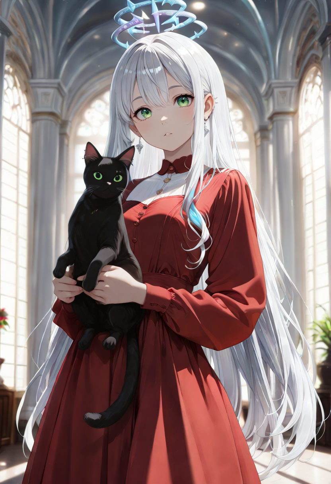
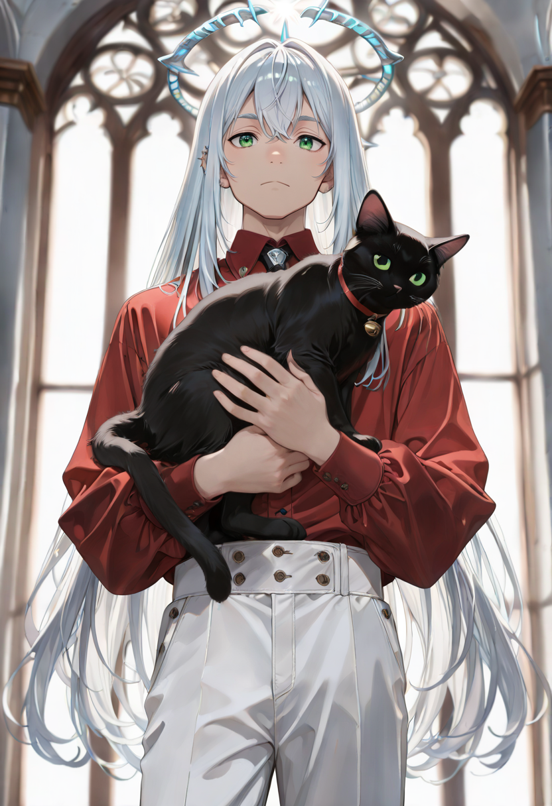
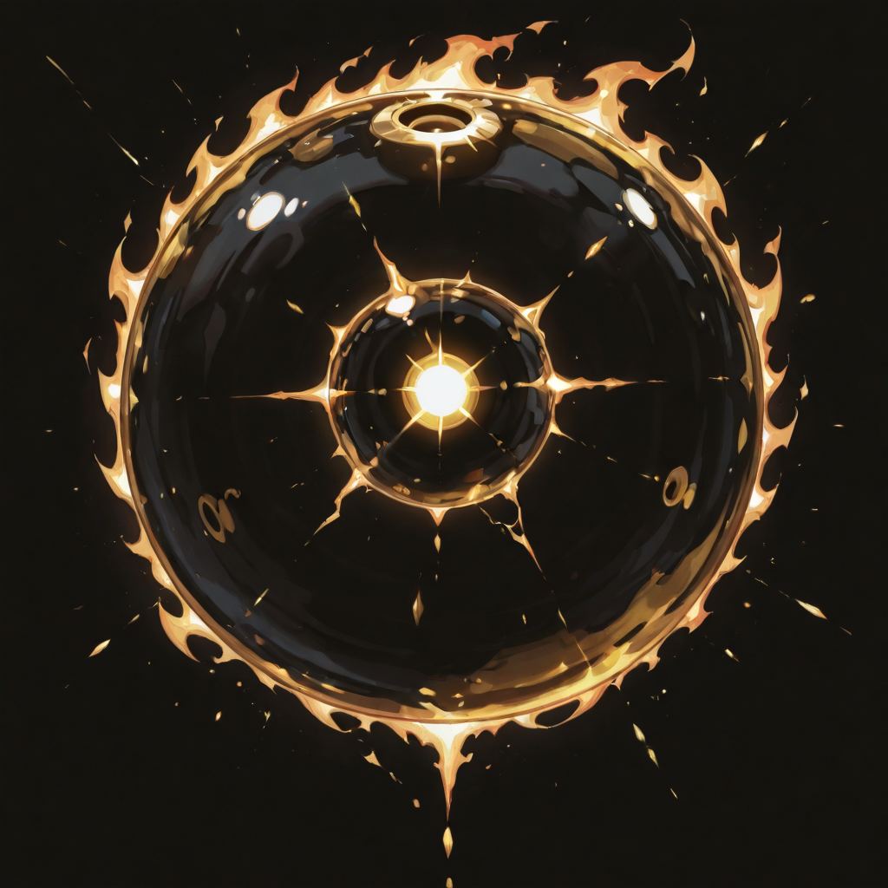
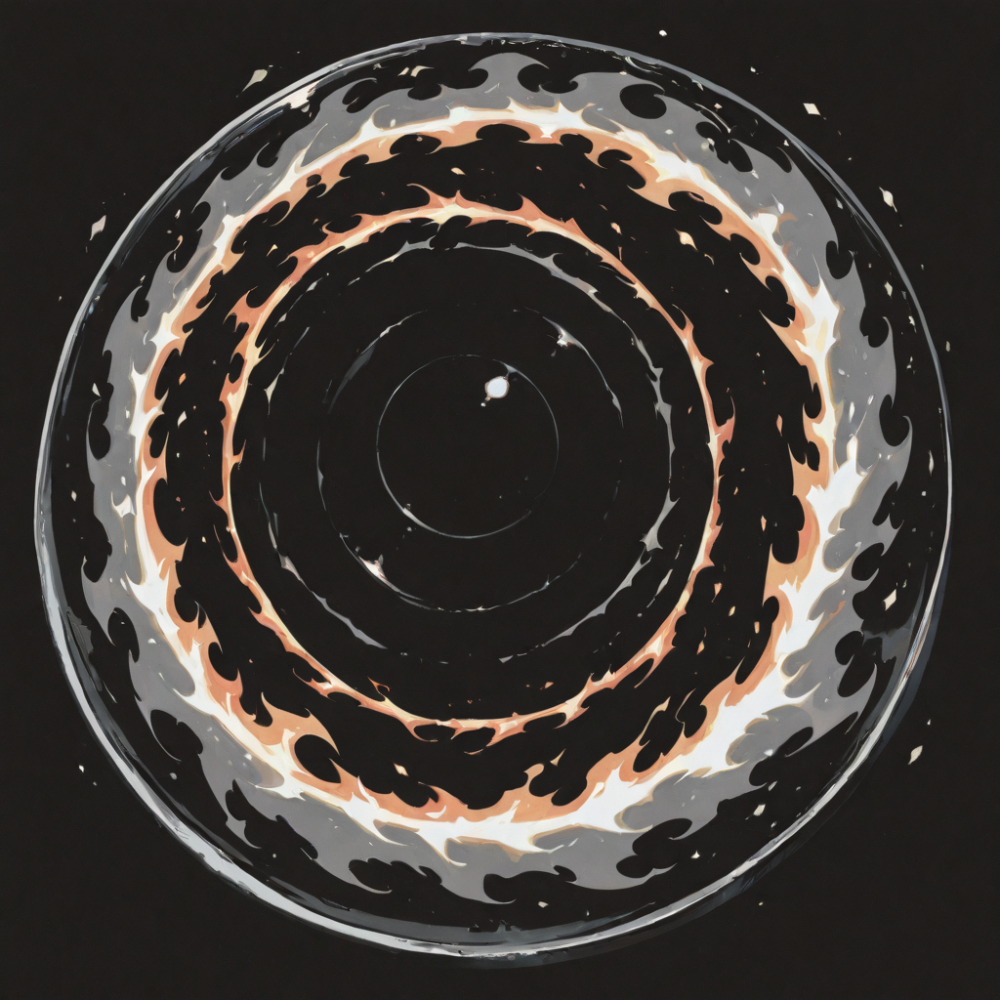
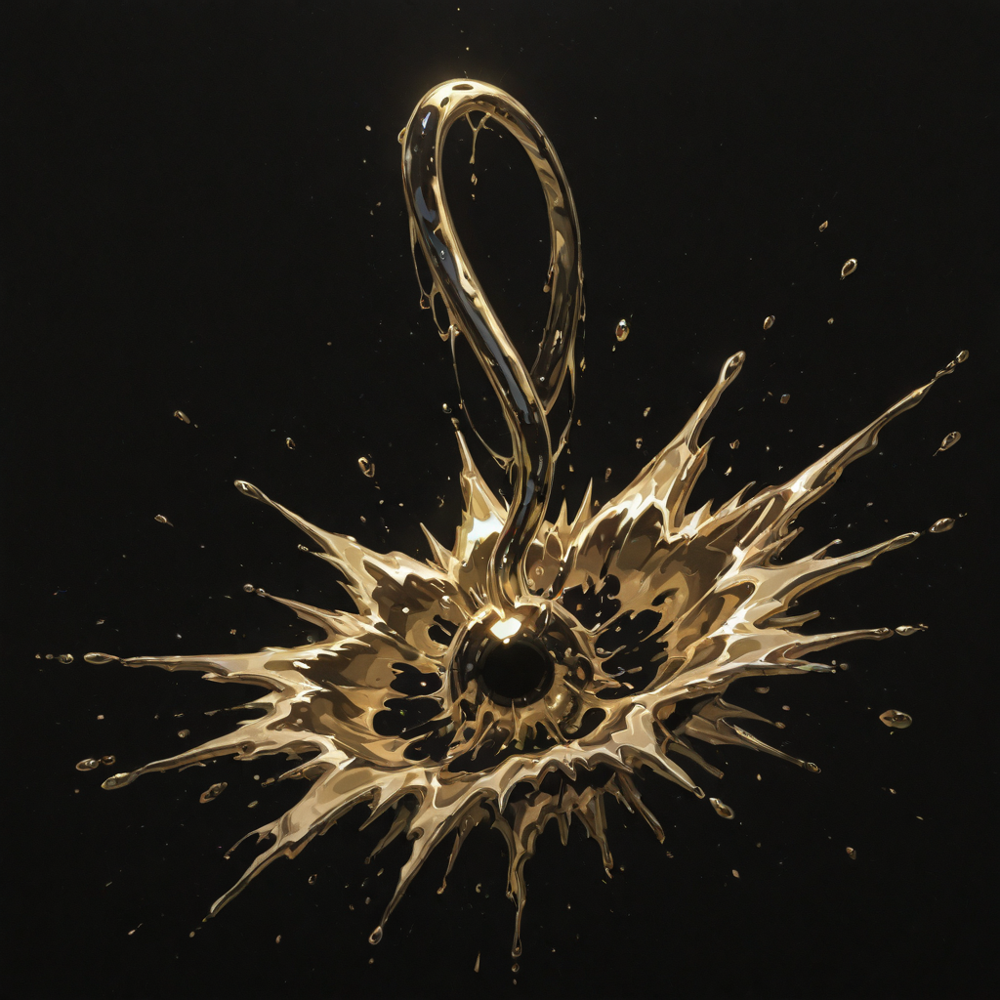
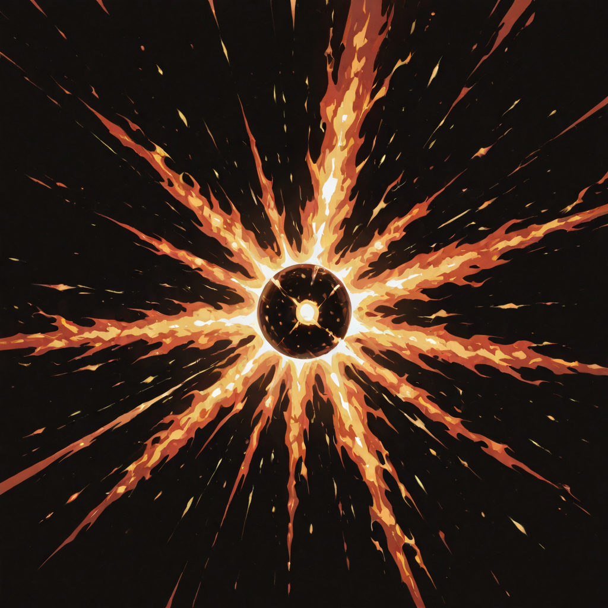
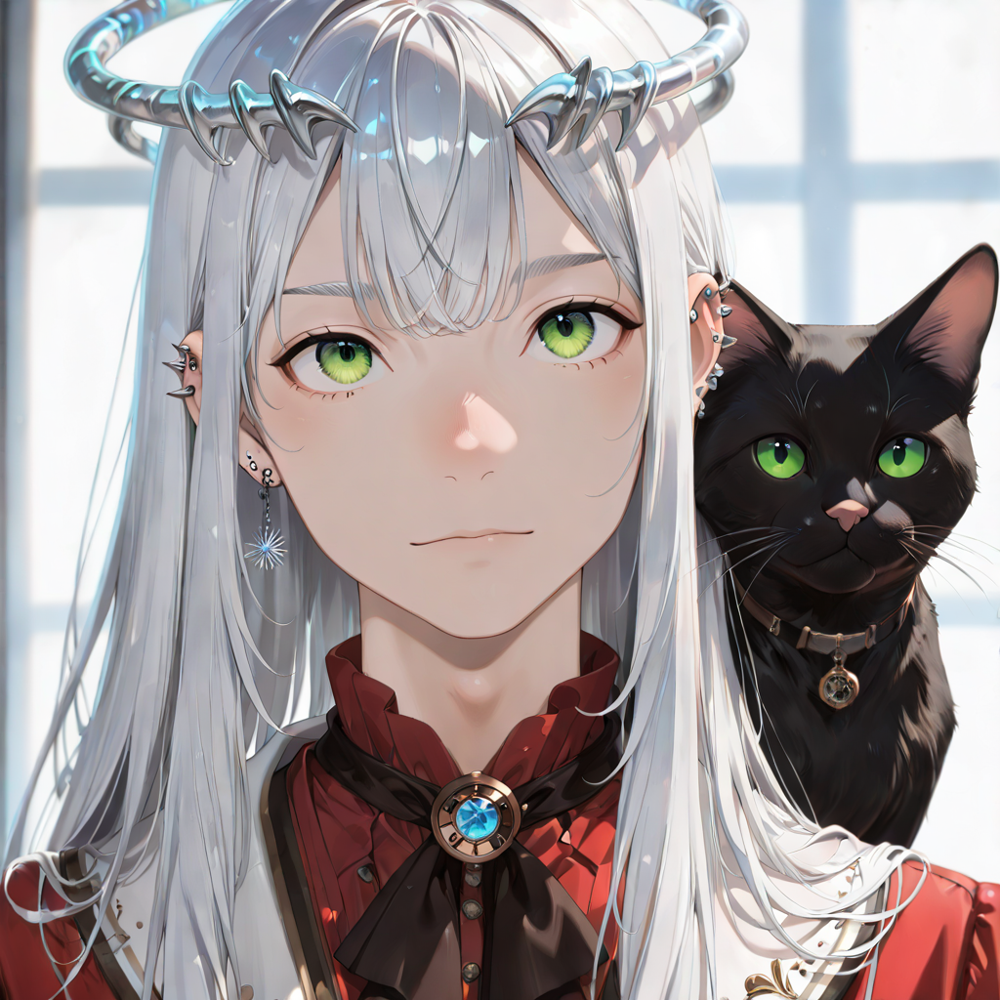

Accelerating the Inevitable
In life, he ruled. He does not remember which territory, which dynasty, which century , the sap has compressed it all into a general truth: he understood power before he understood anything else, and that understanding did not die with him. What remained is not a king. It is the part of a king that was worth keeping.
The Prince leads the Heralds of Dust with the particular authority of a person who has exhausted every concern about authority. He does not need to be feared. He does not need to be loved. He needs the mages to be positioned correctly and the fire to arrive where it was meant to arrive , and these are both things he is very good at ensuring.
His form retains the most human silhouette of any Araldi officer: upright, still, wearing what might once have been court armor, now transmuted into something that burns at the edges. He walks through the fire his own mages produce without appearing to notice it. The Araldi have decided this is either a metaphor or proof that he was always this way.
Tactical Data

Fire Flash
Base
Blazing Command
Active
Noblesse Oblige
Passive
Prince's Signal
UltimateGallery
